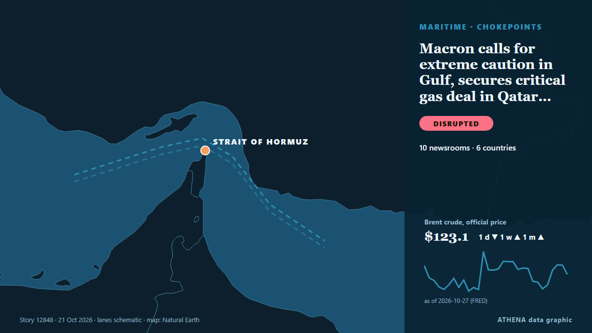

Macron calls for extreme caution in Gulf, secures critical gas deal in Qatar state visit

French president concludes his state visit by reinforcing the strategic partnership with Qatar. من Euronews English
نشرته بشكل مستقل 10 مصادر في 6 دول منذ 18 أكتوبر، وأول من نشره Arab Times؛ والتغطية تتراجع. يقدّر ATHENA الخطر بأنه معتدل (2.5/10)، ويعود ذلك أساسًا إلى خطورة الضرر الموصوف ونطاقه الجغرافي والقطاعي. الثقة 87٪ (مرتفعة)، وعدد المصادر المستقلة المؤكِّدة: 10، بمتوسط موثوقية للمصادر يبلغ 80٪. من نقل الخبر: 5 وسائل إعلام في الكويت · Kuwait, 5 وسائل إعلام في فرنسا · France, 3 وسائل إعلام في المملكة العربية السعودية · Saudi Arabia. امتدت التغطية من 18 أكتوبر إلى 21 أكتوبر، على مدى 79 ساعة.
لماذا يهم: يربط مضيق هرمز الخليج العربي بالمحيط المفتوح، ويمر عبره نحو خُمس النفط المستهلك في العالم؛ لذا تحرّك الهجمات على السفن أو التهديدات بإغلاقه أسعار الطاقة وأقساط التأمين خلال ساعات.
ما الذي تغيّر: 4 تقارير جديدة من 3 غرف أخبار خلال 24 ساعة حتى 21 أكتوبر.
تُعرض العناوين بالإنجليزية كما نُشرت.
نظرة سريعة
اختير وقُيِّم وكُتب وفق منهجية ATHENA المنشورة. لا يتدخل أي محرر في الأحداث بعينها. كيف يُنتَج ›
| 18 Oct 07:02 UTC | 1 |
|---|---|
| 18 Oct 10:02 UTC | 0 |
| 18 Oct 13:02 UTC | 0 |
| 18 Oct 16:02 UTC | 0 |
| 18 Oct 19:02 UTC | 1 |
| 18 Oct 22:02 UTC | 0 |
| 19 Oct 01:02 UTC | 0 |
| 19 Oct 04:02 UTC | 1 |
| 19 Oct 07:02 UTC | 2 |
| 19 Oct 10:02 UTC | 3 |
| 19 Oct 13:02 UTC | 1 |
| 19 Oct 16:02 UTC | 3 |
| 19 Oct 19:02 UTC | 1 |
| 19 Oct 22:02 UTC | 0 |
| 20 Oct 01:02 UTC | 0 |
| 20 Oct 04:02 UTC | 0 |
| 20 Oct 07:02 UTC | 0 |
| 20 Oct 10:02 UTC | 0 |
| 20 Oct 13:02 UTC | 0 |
| 20 Oct 16:02 UTC | 1 |
| 20 Oct 19:02 UTC | 1 |
| 20 Oct 22:02 UTC | 0 |
| 21 Oct 01:02 UTC | 0 |
| 21 Oct 04:02 UTC | 1 |
| 21 Oct 07:02 UTC | 0 |
| 21 Oct 10:02 UTC | 0 |
| 21 Oct 13:02 UTC | 1 |
| 19 Oct 15:50 UTC | 5.4 |
|---|---|
| 19 Oct 19:29 UTC | 3.0 |
| 21 Oct 14:31 UTC | 2.5 |
لماذا هذه الأرقام
الأهمية
الخطر
الثقة
التغطية — من نشر الخبر ومتى
العنوان كما نُشر · يفتح الأصل- Arab Times · الكويت · KuwaitFrench President Macron to Visit Kuwait on Monday
- RFI English · فرنسا · FranceMacron begins Gulf tour focused on fuel supplies and strategic ties
- The National · الإمارات العربية المتحدة · United Arab EmiratesPresident Sheikh Mohamed holds talks with Macron on energy and AI
- Arab Times · الكويت · KuwaitFrench President Macron Arrives in Kuwait for Official Visit
- The New Arab · INTMacron opens Gulf tour amid violent protests in France
- Hespress English · المغرب · MoroccoMacron opens Gulf tour after violent protests in France
- France 24 English · فرنسا · FranceFrance 'has to assist' Gulf states, diplomat says as Macron makes three-day visit
- Asharq Al-Awsat (English) · المملكة العربية السعودية · Saudi ArabiaMacron Begins Gulf Tour in Kuwait, Seeking Energy Security and Reopening of Strait of Hormuz
- France 24 English · فرنسا · FranceMacron kicks off three-day Gulf tour, seeks securing fuel supplies amid crisis
- Anadolu Agency (English) · تركيا · TurkeyFrench President Macron arrives in UAE on Gulf tour
- Arab Times · الكويت · KuwaitMacron Arrives in UAE as Gulf Tour Focuses on Hormuz Security
- Arab News · المملكة العربية السعودية · Saudi ArabiaUAE, France discuss stronger coordination to protect maritime security, energy supplies
- Arab Times · الكويت · KuwaitMacron visit milestone in 65 years
- Euronews English · فرنسا · FranceFrance's Macron begins state visit to Qatar as part of wider Gulf tour
- Arab Times · الكويت · KuwaitDeals bind Kuwait, France
- Asharq Al-Awsat (English) · المملكة العربية السعودية · Saudi ArabiaMacron Concludes in Qatar Gulf Tour Focused on Regional Security
- Euronews English · فرنسا · FranceMacron calls for extreme caution in Gulf, secures critical gas deal in Qatar state visit